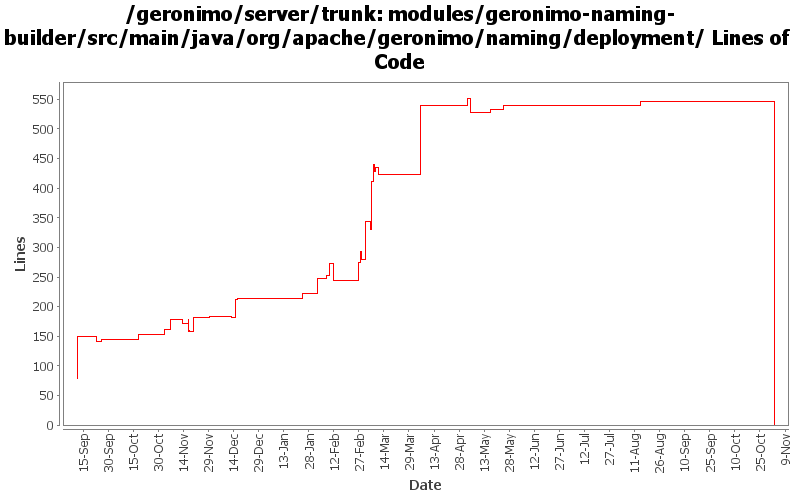

[root]/modules/geronimo-naming-builder/src/main/java/org/apache/geronimo/naming/deployment
 jsr88
(0 files, 0 lines)
jsr88
(0 files, 0 lines)

| Author | Changes | Lines of Code | Lines per Change |
|---|---|---|---|
| Totals | 126 (100.0%) | 1022 (100.0%) | 8.1 |
| djencks | 55 (43.7%) | 799 (78.2%) | 14.5 |
| dims | 5 (4.0%) | 78 (7.6%) | 15.6 |
| jlaskowski | 18 (14.3%) | 51 (5.0%) | 2.8 |
| dain | 6 (4.8%) | 29 (2.8%) | 4.8 |
| kevan | 16 (12.7%) | 28 (2.7%) | 1.7 |
| jgenender | 1 (0.8%) | 18 (1.8%) | 18.0 |
| dwoods | 2 (1.6%) | 7 (0.7%) | 3.5 |
| gawor | 1 (0.8%) | 6 (0.6%) | 6.0 |
| akulshreshtha | 3 (2.4%) | 4 (0.4%) | 1.3 |
| rickmcguire | 1 (0.8%) | 2 (0.2%) | 2.0 |
| prasad | 18 (14.3%) | 0 (0.0%) | 0.0 |
GERONIMO-3565. Modules distributed amongst framework/modules and plugins
0 lines of code changed in 18 files:
add injection target entries to existing env-entry entries (GERONIMO-3411)
6 lines of code changed in 1 file:
GERONIMO-3246 Cleanup exception handling so stack traces for first failures are not discarded.
2 lines of code changed in 1 file:
GERONIMO-3185 Add the class into xml lifecycle method specification when its missing for app client and ejb
30 lines of code changed in 1 file:
GERONIMO-348 Change throw() to log.warn() due to EJB and other deployment failures.
1 lines of code changed in 1 file:
GERONIMO-348 Invalid module path or references in plan should result in failed deployment.
6 lines of code changed in 1 file:
GERONIMO-3134 GERONIMO-3136 Fix app client refs including ejb refs. Get a lot closer to jpa working on the app client
34 lines of code changed in 7 files:
GERONIMO-3131 GERONIMO-3132 GERONIMO-3133 GERONIMO-3134 Defaults for persistence units. Supply locations of jars with persistent classes to the PersistenceUnitInfo. Match a ref with not persistence unit specified to a unique match. Allow wars to have jndi references pointing to the war module, not just the ear
9 lines of code changed in 2 files:
Do not attempt to reprocess lifecycle annotations for ejb modules
7 lines of code changed in 1 file:
fix null pointer exception
4 lines of code changed in 1 file:
GERONIMO-3022 A whole lot more annotation processing tests from Tim McConnell together with persistence context ref parameter handling and @Resource meaning service-ref
121 lines of code changed in 2 files:
GERONIMO-2935 Handler chain annotation support. Refactored Tim's patch somewhat and made some related simplifications
21 lines of code changed in 1 file:
GERONIMO-2934 Hook up injection support for service ref builder
7 lines of code changed in 1 file:
GERONIMO-2940, GERONIMO-2887 More injection work for app client and jetty: lifecycle methods verified on app client. Ear lib dir available to app client. Also upgrade to jetty snapshot for jetty lifecycle method support
19 lines of code changed in 2 files:
GERONMO-2887 More work to on injections and lifecycle methods
39 lines of code changed in 1 file:
GERONIMO-2934 Further refactoring of resource annotation builders. Removes duplicate processing
98 lines of code changed in 1 file:
GERONIMO-2934 Create ClassFinder in module builders. This almost certainly has bugs
33 lines of code changed in 2 files:
GERONIMO-2848 @WebServiceRef support
65 lines of code changed in 1 file:
GERONIMO-2827 some ee5 app client support: no dd required and some injection support. Also better support for no dd in ears, and help ejb module builder not object if its given a non-ejb module. Also refactor some naming builder stuff
4 lines of code changed in 2 files:
Copy namespaces to xml fragment when creating a copy of an xmlbeans object
18 lines of code changed in 1 file:
GERONIMO-2887 Start hooking up injection for jetty
37 lines of code changed in 2 files:
Fix for GERONIMO-2821 - SwitchingServiceRefBuilder environment fix (take 2)
6 lines of code changed in 1 file:
Fix for GERONIMO-2813 - SwitchingServiceRefBuilder environment fix
37 lines of code changed in 1 file:
Hard code naming builders to always add dependencies
8 lines of code changed in 2 files:
Fix for GERONIMO-2791 - Switching ServiceRef naming builder
16 lines of code changed in 2 files:
Fix for GERONIMO-2791 - Switching ServiceRef naming builder
19 lines of code changed in 1 file:
Fixed ejb-ref and ejb-local-ref to business interfaces
9 lines of code changed in 1 file:
GERONIMO-2723 Upgrade naming-builder and hence j2ee-builder to use javaee 5 schemas
4 lines of code changed in 3 files:
GERONIMO-2657 Pay attention to spec descriptors as well as our proprietary ones. Change the naming schema to use the same constant strings as the spec. Include a test of spec descriptor persistence refs
1 lines of code changed in 1 file:
GERONIMO-2657 intermediate checkin, new method in AbstractNamingBuilder and deal with spec refs in PersistenceUnitRefBuilder
34 lines of code changed in 2 files:
GERONIMO-2652 fix for mysterious xmlbeans validation problems fixed by copying even elements that are already the correct type
1 lines of code changed in 1 file:
GERONIMO-2580 fix misplaced } that broke comparison when environment contains more than one dependency
7 lines of code changed in 1 file:
GERONIMO-2460 move some persistence builders into the persistence builder module, and update them to use more infrastructure
32 lines of code changed in 2 files:
GERONIMO-2537 Update more src file headers to be compliant with new apache policy. Also made some updates for consistency
2 lines of code changed in 1 file:
GERONIMO-2499 missed a use of the extra-stuff bucket
3 lines of code changed in 1 file:
GERONIMO-2537 Update the src headers in server/trunk/modules to be compliant with the new ASF src header and copyright policy (http://www.apache.org/legal/src-headers.html). I also did some cleanup of the src headers and tried to make them all a consistent format
26 lines of code changed in 15 files:
GERONIMO-2484 NamespaceDrivenBuilders should register QNameSets
11 lines of code changed in 2 files:
GERONIMO-2427 fix some problems with namingBuilders: in particular EnvironmentEntryBuilder wasn't converting elements correctly
8 lines of code changed in 2 files:
GERONIMO-2460 add application managed JPA support
17 lines of code changed in 1 file:
Partial fix for GERONIMO-2537 All Geronimo source files must be brought in line with the new ASF source header and copyright notice policy
The modules directory is supposed to be migrated. There're some issues with some files, but they'll be handled manually
51 lines of code changed in 18 files:
(5 more)